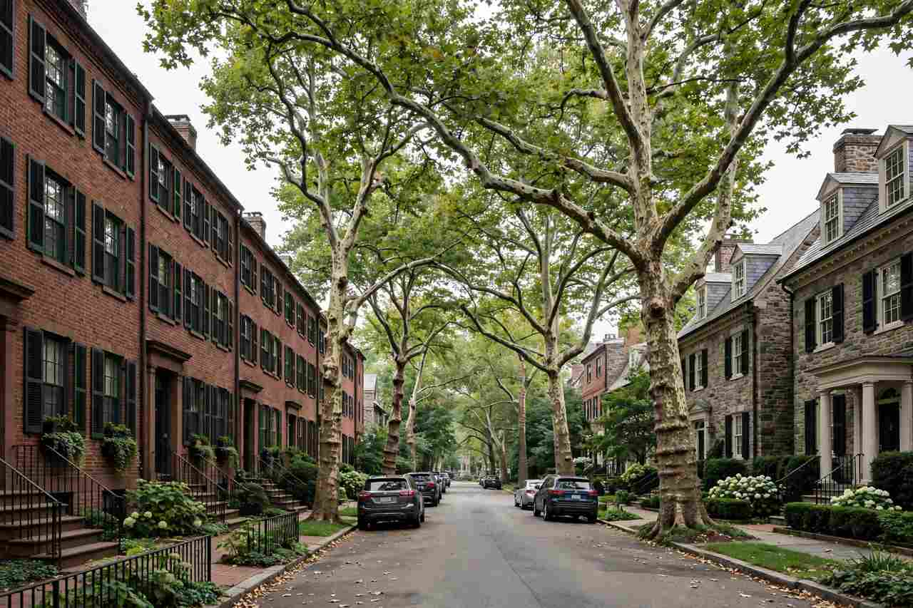

Rodent Control · Apollo, PA
Fast Rodent Control in Apollo, PA
If rodents have moved into your Apollo home or business, Murvo can help today. Our local, licensed crews provide same-day inspection, targeted removal, durable exclusion, and cleanup, all under one flat-rate written quote with a written guarantee. No hourly billing and no surprise add-ons, just rodent specialists serving Apollo and communities throughout Armstrong County every day of the week. Local crews cover 1 ZIP codes in the Apollo area, from Leechburg to the far side of Armstrong County.
24/7Availability
1ZIP codes covered
Same-dayResponse
Licensed · Upfront options · Written guarantees · Fully insured
Apollo at a glance
Local Rodent Control for Apollo, PA.
Armstrong County
Countywestern Pennsylvania
RegionPittsburgh · 24 mi
Nearest metro143 miles west of Harrisburg
From Harrisburg1
ZIP codes covered Service by service in Apollo
Rodent Control Services Available in Apollo
The full range of residential and commercial rodent services in Apollo and Armstrong County - built around the species and housing here, from emergency removal and same-day control to exclusion, proofing, trapping, cleanup, and damage repair. Every service below is quoted flat-rate in writing and backed by our workmanship guarantee.
- 01Rodent Control↗
- 02Rodent Inspection↗
- 03Rodent Removal↗
- 04Rodent Exclusion↗
- 05Rodent Proofing↗
- 06Rat Control↗
- 07Mice Control↗
- 08Mouse Removal↗
- 09Rat Removal↗
- 10Rodent Trapping↗
- 11Rodent Baiting↗
- 12Rodenticide Application↗
- 13Attic Rodent Removal↗
- 14Crawl Space Rodent Removal↗
- 15Wall Rodent Removal↗
- 16Kitchen Rodent Control↗
- 17Garage Rodent Control↗
- 18Commercial Rodent Control↗
- 19Residential Rodent Control↗
- 20Emergency Rodent Removal↗
- 21Same-Day Rodent Control↗
- 22Rodent Damage Repair↗
- 23Rodent Waste Cleanup↗
- 24Rodent Disinfection↗
- 25Rodent Odor Removal↗
- 26Dead Rodent Removal↗
- 27Rodent Dropping Cleanup↗
- 28Rodent Exclusion for Roofs↗
- 29Rodent Exclusion for Vents↗
- 30Rodent Exclusion for Chimneys↗
Rodent Control in Apollo
Rodent Control in Apollo
In Apollo, pre-war rowhomes, brownstones, triple-deckers, and older single-family homes give rodents warmth, shelter, and easy routes through basement foundations, sewer and pipe chases, shared party walls, and alley-facing garage and door seals, especially once nights turn cold across Armstrong County. Our licensed, insured technicians identify the species, map active runways, and build a control plan around your home rather than a generic spray. Every visit is documented with photos, trap records, and clear next steps for your household.
Homeowners in Apollo call Murvo for rodent control because the problem here is specific: Norway rat (Rattus norvegicus) pressure around pre-war rowhomes, brownstones, triple-deckers, and older single-family homes, tight access at basement foundations, sewer and pipe chases, shared party walls, and alley-facing garage and door seals, and activity that follows the local season. Our Armstrong County crews diagnose the real source before recommending work, explain the options in plain language, and quote one flat rate in writing. Across Apollo - including North Apollo, East Vandergrift - every visit is backed by licensed, insured technicians and our written workmanship guarantee. The Apollo crews who handle rodent control also handle the follow-through - proofing, cleanup, and monitoring - so one visit can close the whole problem.
The pattern in Armstrong County is predictable, so the response should be methodical. First comes identification, because Norway rat (Rattus norvegicus) and House mouse (Mus musculus) nest and feed in different places. Traps then go where travel is proven, not where it is convenient, and catches are logged by location. Sealing follows only after activity drops, using materials matched to each opening. Finally, monitoring stays in place long enough to catch a late survivor or a new arrival, and those readings decide when the program closes. That discipline is what turns a busy first week into a genuinely quiet second month for the household.
After you book, we confirm a time window and your background-checked technician arrives in a marked vehicle with identification. You receive a flat-rate written quote before any work starts. Once approved, trapping and sealing begin, and follow-up visits are scheduled before we leave, with the guarantee in writing. They walk the property with you, inspect inside and out, and explain what they find with photos. No work begins without your approval.
In most of Apollo, we can offer a same-day appointment for rodent control, and our lines are open 24/7 for urgent cases like scratching in the walls or a rodent in a living area. Your technician inspects first, explains the plan, and quotes a flat rate in writing before any work begins, so help starts fast without surprises. If you are seeing signs now, an inspection this week is the fastest way to know which situation you are in.
Murvo does not quote rodent control sight unseen, because species, activity, and sealing needs change the work involved. After inspection you get one flat-rate written quote, and that is the figure you pay. As national context only, Angi's 2026 figures put rat and mouse removal and control at an average of $396, with a typical range of $189 to $655 — a benchmark, not a Murvo price.
Rodent Inspection in Apollo
Rodent Inspection in Apollo
A proper rodent inspection in Apollo answers three questions: which species is active, where is it nesting, and how is it getting inside? Our licensed, insured technicians document runways, droppings, and damage with photos and plain-language notes, then separate urgent fixes from preventive ones. There is no pressure to proceed, and every recommendation is priced in writing first.
In Apollo, rodent inspection is not a generic spray-and-go service. Rodents exploit basement foundations, sewer and pipe chases, shared party walls, and alley-facing garage and door seals in pre-war rowhomes, brownstones, triple-deckers, and older single-family homes, and a fix that ignores those routes does not last. Murvo's Apollo team inspects first, shows you the evidence - droppings, gnaw marks, entry gaps - and then lays out the work with a flat-rate written quote. We serve all of Armstrong County from Apollo, including North Apollo, East Vandergrift, and every job is covered by our written workmanship guarantee. Coverage for rodent inspection spans 1 ZIP codes in Armstrong County, including 15613.
We listen first: when you hear noises, and where, often points straight to the most active nesting areas. Technicians then trace active runways, identify whether droppings belong to Norway rat (Rattus norvegicus) or House mouse (Mus musculus), and check insulation and wiring for damage. The visit ends with a written report covering species, entry points, contamination, and the removal and exclusion steps we recommend, each with a flat-rate price. That detail stops you paying for treatment aimed at the wrong species or the wrong part of the building.
Booking a rodent inspection in Apollo takes one call, and same-day appointments are often available. Nothing proceeds without your approval, and urgent items are clearly flagged. Your technician arrives on time, walks the property with you, and inspects the attic, crawl space, and exterior in one visit. Findings are explained with photos before you receive a flat-rate written quote for any recommended work. You keep the full written report either way.
Inspections are the fastest way we help in Apollo: same-day appointments are available in most areas, and urgent calls are answered 24/7. A typical rodent inspection takes under an hour for most homes, and you leave the visit with photos, written findings, and a flat-rate quote for any work we recommend, so decisions never wait on us. An Apollo inspection confirms it on site - dropping size, gnaw marks, and entry points tell the story quickly.
Your exact rodent inspection price is confirmed before we visit, and any follow-up work is quoted as a flat rate in writing after the inspection — no hourly billing. For context, Angi's 2026 data puts a professional rodent inspection nationally at $100 to $200, often credited toward the job if you proceed.
Rodent Removal in Apollo
Rodent Removal in Apollo
A removal visit should solve a health concern, not create one. Murvo technicians wear protective equipment, bag and remove contaminated material safely, and keep children and pets away from working areas. We explain each stage in plain language, confirm when rooms are safe to use again, and back the finished job with a written workmanship guarantee.
When you need rodent removal in Apollo, the job starts with what is actually happening in your part of Armstrong County. Murvo crews work Apollo every week, so they know how Norway rat (Rattus norvegicus) and House mouse (Mus musculus) behave around pre-war rowhomes, brownstones, triple-deckers, and older single-family homes here - and where they get in: basement foundations, sewer and pipe chases, shared party walls, and alley-facing garage and door seals. We arrive equipped for the full job, confirm the flat rate in writing before work begins, and cover the whole Apollo area, including North Apollo, East Vandergrift. No call-center runaround and no open-ended hourly billing - just a local crew, a clear plan, and a written quote you approve first. Around Leechburg, North Apollo, East Vandergrift, the pattern is similar: House mouse (Mus musculus) finds basement foundations, sewer and pipe chases, shared party walls, and alley-facing garage and door seals first, and lasting rodent removal has to close those routes.
We favor trap-based, no-poison removal first where practical, which is safer around children and pets and avoids animals dying in hidden voids. Dead animals in inaccessible places are located and retrieved before odor develops, contaminated nesting material is removed, and sealing recommendations are prioritized so the route indoors closes permanently. Traps are matched to the species and setting, placed where droppings and rub marks show real travel routes, then cleared and reset until numbers reach zero. Monitoring then confirms the home stays clear.
Once removal is underway, expect short, predictable visits. Your technician checks each mapped trap, removes catches hygienically, resets what is still needed, and updates the record with you. When catches reach zero, monitoring confirms it, sealing is discussed, and the job closes with a walkthrough and your guarantee paperwork in hand before we leave. At close, prevention advice is tailored to what actually attracted rodents to your property, not copied from a generic checklist.
For active infestations in Apollo, rodent removal can usually start the same day you call, and our team answers 24/7 when a rodent is loose in a living area. The first visit confirms activity and sets traps straight away; return visits then clear and reset them until monitoring shows the property is completely clear. In Armstrong County, most cases involve the Norway rat (Rattus norvegicus) and the House mouse (Mus musculus), so the inspection focuses on their routes first.
How many animals are active, which species they are, and how much sealing follows removal all shape the price, so we assess first and then quote one flat rate in writing. Angi's 2026 national context — an average of $396 and a typical $189 to $655 range for rat and mouse removal — is provided for comparison only; your written quote is the exact Murvo figure.
Rodent Exclusion in Apollo
Rodent Exclusion in Apollo
Trapping alone only buys time if rodents can walk straight back in. Rodent exclusion in Apollo is the permanent fix: a full entry-point survey, then sealing with materials rodents cannot gnaw through. Murvo clears active animals first so none are sealed inside, gives one flat-rate written quote before work starts, and guarantees the workmanship on every seal installed.
In Apollo, rodent exclusion is not a generic spray-and-go service. Rodents exploit basement foundations, sewer and pipe chases, shared party walls, and alley-facing garage and door seals in pre-war rowhomes, brownstones, triple-deckers, and older single-family homes, and a fix that ignores those routes does not last. Murvo's Apollo team inspects first, shows you the evidence - droppings, gnaw marks, entry gaps - and then lays out the work with a flat-rate written quote. We serve all of Armstrong County from Apollo, including North Apollo, East Vandergrift, and every job is covered by our written workmanship guarantee. Around Leechburg, North Apollo, East Vandergrift, the pattern is similar: House mouse (Mus musculus) finds basement foundations, sewer and pipe chases, shared party walls, and alley-facing garage and door seals first, and lasting rodent exclusion has to close those routes.
Before any sealing, active rodents are cleared with trapping so nothing is trapped inside the structure. A final walkthrough shows you every protected opening, and monitoring checks confirm no new activity appears at sealed points. We then work opening by opening around basement foundations, sewer and pipe chases, shared party walls, and alley-facing garage and door seals, rooflines, and utility penetrations, photographing each finished seal. Because exclusion removes the route in rather than relying on chemicals, it reduces the need for rodenticides and supports pet-safe, no-poison control. Every seal is listed on your written guarantee.
The visit starts with a check that no animals remain inside, using trapping and monitoring where needed. Once clear, your background-checked crew seals the agreed openings with chew-resistant materials, working cleanly around your home. Before leaving, we show you each finished seal, explain how it was protected, and confirm the guarantee paperwork. A later re-check confirms the seals are holding and activity has stopped. You approve the finished work before we close the job.
Rodent exclusion in Apollo usually starts with a survey visit we can often schedule the same day you call. Sealing itself is booked as soon as any active animals are cleared, because nothing is sealed inside. Most homes are fully sealed within days, not weeks, and urgent entry points near wiring or food areas are prioritized first. The written quote for your Apollo property will spell out exactly which of these applies before any work starts.
After the survey of your Apollo home, every opening that needs sealing is listed and priced as one flat-rate written quote, so you pay only for the work your property needs. For national context, Angi's 2026 data puts basic exclusion at $200 to $600 depending on access and the number of openings; that benchmark is not a Murvo price.
Rodent Proofing in Apollo
Rodent Proofing in Apollo
Most Apollo proofing clients have not seen a rodent yet, and that is exactly the point. A rodent proofing survey finds the gaps, screens, and habits that would invite Norway rat (Rattus norvegicus) and House mouse (Mus musculus) in later, then fixes them in priority order under one flat-rate written quote you approve first.
In Apollo, rodent proofing is not a generic spray-and-go service. Rodents exploit basement foundations, sewer and pipe chases, shared party walls, and alley-facing garage and door seals in pre-war rowhomes, brownstones, triple-deckers, and older single-family homes, and a fix that ignores those routes does not last. Murvo's Apollo team inspects first, shows you the evidence - droppings, gnaw marks, entry gaps - and then lays out the work with a flat-rate written quote. We serve all of Armstrong County from Apollo, including North Apollo, East Vandergrift, and every job is covered by our written workmanship guarantee. Seasonal timing matters for rodent proofing in Apollo: rodents surge in Apollo from October through March.
Materials follow the same standard as full exclusion work: copper mesh packed into irregular gaps, hardware cloth over openings that need airflow, flashing at vulnerable junctions, and sealants matched to smaller cracks. Around kitchens, pipe runs and the voids behind units receive particular attention, because warmth and food meet there. The written plan photographs each weakness, states who handles it, and schedules a seasonal re-check, since new gaps appear as a building ages and proofing works best as maintenance. Seasonal timing is noted in the plan as well.
Arrange a survey at a time that suits you; there is no emergency, so scheduling stays relaxed. Your technician walks every side of the property with you, photographs weak points, and talks through the plan in plain language. You then receive a written quote separating essential work from optional improvements, and nothing proceeds without your say-so. Staging the work is fine; essential sealing can proceed first while optional improvements wait until a season or budget that suits you better.
Rodent proofing is preventive, so there is rarely a rush, but surveys in Apollo can often be arranged the same day you call, and always within a few days. Most proofing work is completed in a single visit once you approve the plan, and booking before colder weather gives your home protection ahead of the seasonal rush indoors. The written quote for your Apollo property will spell out exactly which of these applies before any work starts.
We survey your Apollo property first, separate the quick wins you can handle yourself from the specialist sealing, and quote the professional work as one flat rate in writing so spending can be staged. Angi's 2026 national context puts exclusion, the core of proofing, at $200 to $600 for basic work — a benchmark only, not a Murvo price.
Rat Control in Apollo
Rat Control in Apollo
In pre-war rowhomes, brownstones, triple-deckers, and older single-family homes, rats exploit structure and routine together, traveling fences and pipes to reach food near basement foundations, sewer and pipe chases, shared party walls, and alley-facing garage and door seals. Our rat control across Armstrong County checks attics, basements, drains, and outbuildings as one connected system, because treating a single room while harborage survives elsewhere simply moves the problem around the property.
In Apollo, rat control is not a generic spray-and-go service. Rodents exploit basement foundations, sewer and pipe chases, shared party walls, and alley-facing garage and door seals in pre-war rowhomes, brownstones, triple-deckers, and older single-family homes, and a fix that ignores those routes does not last. Murvo's Apollo team inspects first, shows you the evidence - droppings, gnaw marks, entry gaps - and then lays out the work with a flat-rate written quote. We serve all of Armstrong County from Apollo, including North Apollo, East Vandergrift, and every job is covered by our written workmanship guarantee. The Apollo crews who handle rat control also handle the follow-through - proofing, cleanup, and monitoring - so one visit can close the whole problem.
Safety shapes every placement decision. Traps are positioned away from pet routes and play areas and explained to the household in advance. Where bait is genuinely necessary outdoors, it goes only inside locked, tamper-resistant stations, secured and labeled, never loose, and always alongside trapping and sealing rather than instead of them. Droppings are handled carefully: surfaces are disinfected before cleaning, never dry-swept, because disturbing dry material can spread contamination through the air. Households receive that safety briefing in plain terms before the first station or trap is ever left behind.
Call and describe where signs are strongest; that directs the first inspection. Approval starts the program the same visit, with follow-up checks booked ahead so momentum never depends on you calling back. Your technician maps routes and harborage, explains the pre-baiting plan honestly, including why results build over days, and provides the written quote. You will know after each visit what was caught, where placements changed, and what the next check is specifically looking for.
Rats do not wait, and neither do we: rat control in Apollo can usually start with a same-day inspection, and urgent calls are answered 24/7. Pre-baiting begins on the first visit once you approve the written quote, traps are set as soon as rats are feeding confidently, and scheduled checks keep the program moving until activity stops. That is also why Murvo pairs removal with exclusion in Apollo - treating the animal without closing basement foundations, sewer and pipe chases, shared party walls, and alley-facing garage and door seals rarely lasts.
Species, colony size, and the number of entry points to seal all affect rat work, which is why Murvo inspects first and quotes one flat rate in writing. Angi's 2026 figures, given for national context only, average rat control and removal at $396 and typically run $189 to $655; the written quote for your Apollo home is the exact price.
Mice Control in Apollo
Mice Control in Apollo
Small rice-like droppings, shredded nesting material, and faint scratching after dark are the classic signs mice have moved into an Apollo home. Murvo's mice control surveys activity and entry points, traps in clusters along the routes mice travel nightly, and seals gaps as small as a pencil width. One flat-rate written quote covers the program before work begins.
Homeowners in Apollo call Murvo for mice control because the problem here is specific: Norway rat (Rattus norvegicus) pressure around pre-war rowhomes, brownstones, triple-deckers, and older single-family homes, tight access at basement foundations, sewer and pipe chases, shared party walls, and alley-facing garage and door seals, and activity that follows the local season. Our Armstrong County crews diagnose the real source before recommending work, explain the options in plain language, and quote one flat rate in writing. Across Apollo - including North Apollo, East Vandergrift - every visit is backed by licensed, insured technicians and our written workmanship guarantee. In Apollo, mice control calls most often involve pre-war rowhomes, brownstones, triple-deckers, and older single-family homes, where basement foundations, sewer and pipe chases, shared party walls, and alley-facing garage and door seals decide whether the fix holds.
Mice travel short, familiar routes, hugging walls and rarely crossing open floors. Sealing then closes pencil-width gaps behind baseboards, around radiator pipes, and at service entries, while scent-marked surfaces are cleaned so new mice find no welcoming trail. Control exploits that habit: traps are clustered along baseboards, behind appliances, and inside attic voids where droppings concentrate, rather than scattered hopefully around rooms. Technicians clear and reset on schedule, tracking numbers visit by visit until they reach zero. That is why placements stay fixed between checks unless evidence, rather than impatience, gives a reason to move them.
After booking, we confirm your time window and any rooms where you have seen droppings or heard scratching. You approve the plan and price before trapping starts. On arrival, your background-checked technician inspects, sets clustered traps at proven hotspots, and talks you through pet and child safety around placements. Return visits clear and reset traps, then sealing is completed and the written guarantee confirmed at the final check. No surprises are added later.
Mice multiply fast, so mice control in Apollo is built to start fast too: a survey can often be arranged the same day you call, with traps set on that first visit once the quote is approved. Because mice investigate new objects quickly, catches usually begin soon after, and check visits follow until a final confirmation shows activity has stopped. In Armstrong County, most cases involve the Norway rat (Rattus norvegicus) and the House mouse (Mus musculus), so the inspection focuses on their routes first.
The number of rooms affected and the amount of sealing required set the price, so Murvo surveys first and quotes one flat rate in writing. For national context only, Angi's 2026 data averages rat and mouse control and removal at $396, typically $189 to $655 — not a Murvo price; your written quote is exact.
Mouse Removal in Apollo
Mouse Removal in Apollo
You found droppings in a cabinet or heard scratching in the attic of your Apollo home, and you want the mice out, not managed indefinitely. Murvo's mouse removal locates nests and feeding areas room by room, runs a multi-trap program until catches reach zero, and seals access points behind it. One flat-rate written quote is agreed before work begins.
In Apollo, mouse removal is not a generic spray-and-go service. Rodents exploit basement foundations, sewer and pipe chases, shared party walls, and alley-facing garage and door seals in pre-war rowhomes, brownstones, triple-deckers, and older single-family homes, and a fix that ignores those routes does not last. Murvo's Apollo team inspects first, shows you the evidence - droppings, gnaw marks, entry gaps - and then lays out the work with a flat-rate written quote. We serve all of Armstrong County from Apollo, including North Apollo, East Vandergrift, and every job is covered by our written workmanship guarantee. The Apollo crews who handle mouse removal also handle the follow-through - proofing, cleanup, and monitoring - so one visit can close the whole problem.
We start with a nest and feeding-area survey, checking attics, cabinets, under-floor voids, and behind kitchen units. All removed animals and contaminated material are bagged and taken away. Dead mice in inaccessible voids are located and dealt with before odor becomes a problem, and access points are then sealed as part of full exclusion. Technicians set multiple traps at proven activity points, return to clear and reset them, and track catch numbers until they fall to zero. Photos record progress at every visit.
Booking takes one call. Work begins only after you approve the written quote, and trap checks are booked ahead so nothing drifts. At sign-off we review catch records together, confirm sealing is complete, and leave you with guarantee paperwork and prevention advice. We agree a time window, and your background-checked technician arrives ready to survey attics, cabinets, and voids in one visit. Rooms are confirmed fully safe to use again.
In Apollo, mouse removal can often begin the same day you call, especially where mice are active in kitchens or living areas. The first visit surveys nesting sites and sets traps immediately after you approve the quote; because mice investigate traps quickly, catches usually start fast, and return visits continue until numbers reach zero. Murvo's Apollo crews explain the finding either way, and the flat-rate quote leaves the decision with you.
Rooms involved and sealing needed determine the cost of removal, so we survey first and agree a flat rate in writing before work begins. As national context only, Angi's 2026 data averages rat and mouse removal at $396, with a typical range of $189 to $655; that benchmark is not a Murvo price, and your written quote covers your exact program.
Rat Removal in Apollo
Rat Removal in Apollo
If a rat is loose in a living area tonight, call; our lines stay open 24/7. Murvo pairs urgent response with a documented plan: hygienic removal across repeat visits, evidence from monitoring at the end, and a final walkthrough, so clearance is demonstrated to you rather than simply announced.
Homeowners in Apollo call Murvo for rat removal because the problem here is specific: Norway rat (Rattus norvegicus) pressure around pre-war rowhomes, brownstones, triple-deckers, and older single-family homes, tight access at basement foundations, sewer and pipe chases, shared party walls, and alley-facing garage and door seals, and activity that follows the local season. Our Armstrong County crews diagnose the real source before recommending work, explain the options in plain language, and quote one flat rate in writing. Across Apollo - including North Apollo, East Vandergrift - every visit is backed by licensed, insured technicians and our written workmanship guarantee. Around Leechburg, North Apollo, East Vandergrift, the pattern is similar: House mouse (Mus musculus) finds basement foundations, sewer and pipe chases, shared party walls, and alley-facing garage and door seals first, and lasting rat removal has to close those routes.
Scale determines everything, so assessment precedes action. Technicians establish species, estimate colony size from droppings and runways, and locate harborage before placing a single trap. Pre-baiting unset traps then builds feeding confidence in these naturally cautious animals. Once set, traps are checked frequently, animals are removed hygienically, and placements shift as activity contracts toward its last pockets. Attic colonies receive dedicated work overhead, while any carcass in a void is retrieved before odor develops. Visit notes record weather and access too, since both affect rat movement and help explain any slower nights.
Help the program by securing food, clearing access to the attic or basement, and leaving traps exactly where placed. Sign-off includes the documented evidence, your guarantee in writing, and practical proofing guidance tailored to how rats reached your property in the first place. Your background-checked technician handles removal, adjustments, sanitation, and the final monitoring period. You also receive guidance on drains, vegetation, and storage specific to your property, aimed at discouraging the next colony from settling.
In Apollo, rat removal can usually start the same day you call, with 24/7 answering for rats active in living areas. Pre-baiting begins on the first visit after you approve the written quote, and traps are set once rats feed confidently, typically within days. Repeat visits then run frequently until monitoring confirms the colony is gone. An Apollo inspection confirms it on site - dropping size, gnaw marks, and entry points tell the story quickly.
Colony size, access, and the sealing needed afterwards drive the price, so Murvo assesses the property first and quotes a flat rate in writing covering the full program. Angi's 2026 data, for national context only, averages rat removal at $396 and typically ranges from $189 to $655; that is a benchmark, not a Murvo price.
Rodent Trapping in Apollo
Rodent Trapping in Apollo
For Apollo households who want a poison-free route, trapping delivers measurable results without chemicals in the home. Each catch is recorded by location, building a picture of movement through pre-war rowhomes, brownstones, triple-deckers, and older single-family homes via basement foundations, sewer and pipe chases, shared party walls, and alley-facing garage and door seals until numbers fall to zero. Murvo's licensed, insured technicians then recommend exclusion sealing and cleanup, and the whole program is backed by a written workmanship guarantee.
Homeowners in Apollo call Murvo for rodent trapping because the problem here is specific: Norway rat (Rattus norvegicus) pressure around pre-war rowhomes, brownstones, triple-deckers, and older single-family homes, tight access at basement foundations, sewer and pipe chases, shared party walls, and alley-facing garage and door seals, and activity that follows the local season. Our Armstrong County crews diagnose the real source before recommending work, explain the options in plain language, and quote one flat rate in writing. Across Apollo - including North Apollo, East Vandergrift - every visit is backed by licensed, insured technicians and our written workmanship guarantee. Seasonal timing matters for rodent trapping in Apollo: rodents surge in Apollo from October through March.
Trap selection covers snap traps for quick, humane dispatch, multi-catch devices for busy mouse routes, and live-capture options where you prefer release away from the home. Baits and lures are matched to species and location, and all devices are positioned with pet and child safety in mind and explained to your household. As catches fall, we recommend exclusion sealing, plus droppings cleanup for affected areas, moving the program from active trapping to monitoring and final sign-off. Every device location is mapped for you.
After booking, we confirm your time window and any pet or child considerations for trap placement. The program ends with a monitoring check and a clear written summary. On arrival, your background-checked technician explains each device location and what to expect between visits. Follow-up checks are booked ahead, catches are removed promptly and hygienically, and placements are adjusted as the pattern changes. You always know what was caught and where.
In Apollo, rodent trapping can usually start the same day you call, with traps placed or pre-baiting begun on the first visit after you approve the quote. Mice often investigate within the first night; wary rats need a few days of pre-baiting before traps are set. Scheduled check visits then keep catches moving until numbers reach zero. Around Apollo, pre-war rowhomes, brownstones, triple-deckers, and older single-family homes give rodents the most cover, which is why entry points get checked before traps are set.
Rather than charging by the trap or by the visit, Murvo inspects first and quotes rodent trapping as one flat rate in writing for the complete program, including its check visits. Price depends on species, activity level, and how many checks are needed, and there is no hourly billing at any stage, so there are no per-visit surprises.
Rodent Baiting in Apollo
Rodent Baiting in Apollo
Most Apollo baiting requests start with returning droppings outdoors, around garages, sheds, or fence lines. Murvo answers carefully: activity is mapped first, trapping and exclusion come first, and any stations used are locked and tamper-resistant. One flat-rate written quote covers placement, monitoring, and eventual removal of every station.
In Apollo, rodent baiting is not a generic spray-and-go service. Rodents exploit basement foundations, sewer and pipe chases, shared party walls, and alley-facing garage and door seals in pre-war rowhomes, brownstones, triple-deckers, and older single-family homes, and a fix that ignores those routes does not last. Murvo's Apollo team inspects first, shows you the evidence - droppings, gnaw marks, entry gaps - and then lays out the work with a flat-rate written quote. We serve all of Armstrong County from Apollo, including North Apollo, East Vandergrift, and every job is covered by our written workmanship guarantee. Seasonal timing matters for rodent baiting in Apollo: rodents surge in Apollo from October through March.
Where baiting is not appropriate indoors, we say so, and recommend trapping first followed by proofing of gaps around pipes, vents, and doors. That exclusion-first approach reduces reliance on bait over time, which matters for households with children, pets, or visiting wildlife in Apollo. Consumption records from each visit show whether activity is falling, holding, or moving, guiding whether stations stay, move, or come out entirely in favor of sealing and trapping alone. You receive those records after every monitoring visit.
Booking starts with a conversation about pets, children, and wildlife on your property, because that shapes placement before we arrive. The inspection visit maps activity, agrees each proposed station location with you, and confirms the written quote. Approved stations are installed locked and labeled that visit, with monitoring dates booked before we leave. Nothing about placement, product type, or monitoring frequency is left vague, and you can ask for the record at any point.
Deliberate setup matters more than speed with rodent baiting, but the first step is still fast: an inspection in Apollo can often be arranged the same day you call. Stations are placed only after activity is mapped and you approve the written quote and each location, then monitoring runs on a fixed schedule until consumption stops and activity is confirmed clear. The written quote for your Apollo property will spell out exactly which of these applies before any work starts.
How many locked stations your property needs and how long monitoring runs determine the cost, so Murvo inspects and maps activity first, then quotes one flat rate in writing covering placement and scheduled checks. There are no per-visit surprises, and because the approach is exclusion-first, the aim is to reduce and eventually remove stations rather than maintain them forever.
Rodenticide Application in Apollo
Rodenticide Application in Apollo
Regulation shapes product choice in Pennsylvania: California restricts anticoagulant rodenticides, other states impose their own limits, and Murvo complies with every applicable rule. You receive copies of product labels and safety information for anything applied at your Apollo property, and we talk through children, pets, livestock, and wildlife concerns before any flat-rate written quote is agreed.
In Apollo, rodenticide application is not a generic spray-and-go service. Rodents exploit basement foundations, sewer and pipe chases, shared party walls, and alley-facing garage and door seals in pre-war rowhomes, brownstones, triple-deckers, and older single-family homes, and a fix that ignores those routes does not last. Murvo's Apollo team inspects first, shows you the evidence - droppings, gnaw marks, entry gaps - and then lays out the work with a flat-rate written quote. We serve all of Armstrong County from Apollo, including North Apollo, East Vandergrift, and every job is covered by our written workmanship guarantee. Coverage for rodenticide application spans 1 ZIP codes in Armstrong County, including 15613.
Monitoring data guides the whole treatment: whether it continues, changes product, or stops entirely in favor of proofing alone. We prioritize sealing entry points with exclusion and physical removal so dependence on chemical control shrinks visit by visit. Dead rodents are retrieved promptly where accessible, stations are kept away from pet and child areas, and every product used is documented with its label and safety information, so nothing applied at your property is ever hidden from you. State restrictions are checked before product selection.
Start with the inspection, often bookable the same day, and expect alternatives explained before products are discussed. Your licensed technician confirms whether treatment is justified, reviews safety information with you, and provides the written quote. Application happens only after approval, with monitoring visits scheduled and a clear stopping point agreed in advance. You can pause or stop the program at any point, and stopping triggers removal of stations rather than leaving them behind unattended.
No responsible rodenticide application starts without an inspection, and in Apollo that inspection can often be scheduled the same day you call. If treatment is justified and you approve the written quote, locked stations are installed on that visit. Monitoring then runs on schedule, and treatment stops as soon as the data shows activity has ended. In Armstrong County, activity follows the local season, so timing the work matters as much as the method.
Application cost depends on the number of locked stations, the product required under Pennsylvania rules, and how long monitoring runs. Murvo inspects first, explains whether trapping or exclusion could avoid chemical control entirely, and then quotes one flat rate in writing before work begins. The quote covers scheduled monitoring visits, so there are no per-visit surprises later.
Attic Rodent Removal in Apollo
Attic Rodent Removal in Apollo
Scratching overhead at night in Apollo usually means Norway rat (Rattus norvegicus) climbing to the roofline or House mouse (Mus musculus) slipping through vent gaps into your attic. Murvo's attic rodent removal inspects the attic, roof, and eaves, traps active animals up there, and seals the roofline behind them. Same-day visits are prioritized when chewed wiring is found, because that damage is a genuine fire risk.
Homeowners in Apollo call Murvo for attic rodent removal because the problem here is specific: Norway rat (Rattus norvegicus) pressure around pre-war rowhomes, brownstones, triple-deckers, and older single-family homes, tight access at basement foundations, sewer and pipe chases, shared party walls, and alley-facing garage and door seals, and activity that follows the local season. Our Armstrong County crews diagnose the real source before recommending work, explain the options in plain language, and quote one flat rate in writing. Across Apollo - including North Apollo, East Vandergrift - every visit is backed by licensed, insured technicians and our written workmanship guarantee. Seasonal timing matters for attic rodent removal in Apollo: rodents surge in Apollo from October through March.
Attic work follows Inspect, Remove, Exclude, Clean, and Monitor. Targeted, humane trapping is then set in the attic to clear active animals quickly, with checks on schedule. Once clear, roofline entry points are sealed with metal mesh and flashing as part of wider proofing, and dropping cleanup and disinfection are arranged where insulation is contaminated. A detailed inspection covers the attic, roof, and eaves, identifying species, nests, droppings, and gnawed cables. Monitoring traps stay briefly after sealing to confirm the attic is empty and quiet.
After booking, we confirm safe attic access and any pets or stored items to work around. A final monitoring check and walkthrough confirm the result before we close the job. On arrival, your background-checked technician inspects, explains the plan in plain language, and starts trapping once you approve the written quote. Follow-up visits are booked ahead to clear traps and complete sealing. Insulation and wiring findings are reported to you too.
In Apollo, attic rodent removal visits are often available the same day, and we prioritize attics where chewed wiring creates a fire risk. Trapping starts on the first visit after you approve the written quote, checks run on schedule, and most attics are cleared and sealed within days, with monitoring left briefly to confirm nothing remains inside. The written quote for your Apollo property will spell out exactly which of these applies before any work starts.
Activity levels, roofline sealing, and whether contaminated insulation needs cleanup all affect attic pricing, so Murvo inspects first and quotes one flat rate in writing for the removal program. Cleanup options are priced separately in writing before you decide, so nothing is added once work is underway.
Crawl Space Rodent Removal in Apollo
Crawl Space Rodent Removal in Apollo
In pre-war rowhomes, brownstones, triple-deckers, and older single-family homes, the space underneath offers rodents shelter, burrowing ground at vents, and pipe runs reached through basement foundations, sewer and pipe chases, shared party walls, and alley-facing garage and door seals across Armstrong County. Standing water and leaking pipes raise pressure further, so technicians flag moisture problems during inspection too. Removal also traces wall-void routes upward, because below-house activity often connects to the attic.
In Apollo, crawl space rodent removal is not a generic spray-and-go service. Rodents exploit basement foundations, sewer and pipe chases, shared party walls, and alley-facing garage and door seals in pre-war rowhomes, brownstones, triple-deckers, and older single-family homes, and a fix that ignores those routes does not last. Murvo's Apollo team inspects first, shows you the evidence - droppings, gnaw marks, entry gaps - and then lays out the work with a flat-rate written quote. We serve all of Armstrong County from Apollo, including North Apollo, East Vandergrift, and every job is covered by our written workmanship guarantee. Around Leechburg, North Apollo, East Vandergrift, the pattern is similar: House mouse (Mus musculus) finds basement foundations, sewer and pipe chases, shared party walls, and alley-facing garage and door seals first, and lasting crawl space rodent removal has to close those routes.
Cleanup beneath a home follows careful practice throughout. Technicians also trace connections upward through wall voids, checking whether activity reaches the attic, and report moisture issues with practical recommendations. Photographs of every finished seal accompany your guarantee paperwork, creating a record of exactly what was closed. Droppings and nesting debris are never dry-swept, since disturbing them can spread contamination; surfaces are disinfected first, then waste is bagged and removed by technicians wearing protective equipment. Vent and pier sealing is checked from inside the space, not assumed sound from a glance outside.
After booking, we confirm crawl-space access and any known leaks or standing water beneath the home. Follow-up visits are booked ahead for clearance and sealing. The job closes with a monitoring check and a walkthrough of the documented results together. On arrival, your background-checked technician inspects with protective equipment, sets traps at active areas, and talks you through the findings with photos. Every stage is approved by you before it proceeds.
In Apollo, crawl space rodent removal inspections can usually be arranged within a few days, and sooner where odors are drifting into living areas or activity sounds heavy. Trapping starts on the first visit after you approve the written quote, and clearance plus sealing follow in sequence, with monitoring left in place until the space below is confirmed quiet. Around Apollo, pre-war rowhomes, brownstones, triple-deckers, and older single-family homes give rodents the most cover, which is why entry points get checked before traps are set.
Crawl-space costs depend on access, how many vents and gaps need sealing, and whether waste cleanup is required, so Murvo inspects first and quotes one flat rate in writing. If extra vents need sealing within the agreed scope, there are no surprises, and cleanup options are priced in writing before you decide whether to include them.
Wall Rodent Removal in Apollo
Wall Rodent Removal in Apollo
What should never be used inside a wall? Poison, because an animal dying in a sealed void creates the odor problem everyone fears. Murvo relies on trapping and exclusion instead, safer around children and pets, and finishes with quiet-wall checks at different times of day before declaring the void clear.
In Apollo, wall rodent removal is not a generic spray-and-go service. Rodents exploit basement foundations, sewer and pipe chases, shared party walls, and alley-facing garage and door seals in pre-war rowhomes, brownstones, triple-deckers, and older single-family homes, and a fix that ignores those routes does not last. Murvo's Apollo team inspects first, shows you the evidence - droppings, gnaw marks, entry gaps - and then lays out the work with a flat-rate written quote. We serve all of Armstrong County from Apollo, including North Apollo, East Vandergrift, and every job is covered by our written workmanship guarantee. In Apollo, wall rodent removal calls most often involve pre-war rowhomes, brownstones, triple-deckers, and older single-family homes, where basement foundations, sewer and pipe chases, shared party walls, and alley-facing garage and door seals decide whether the fix holds.
Locating comes before everything else in wall work. Technicians listen at different points, note when noises occur, trace likely entry routes from roofline, baseboards, and pipe runs, and use cameras in accessible voids to confirm where animals travel and nest. Trapping is then placed at those access points to draw rodents out of the void. Checks follow on schedule, and placements shift if monitoring shows activity has moved into a connected void instead. Notes from each listening check are compared over time, turning faint, inconsistent sounds into a reliable activity pattern.
After booking, tell us when the noises happen; timing helps pinpoint the active void before we arrive. Sign-off happens only when monitoring confirms silence. On the day, your background-checked technician listens, traces, and inspects with cameras where possible, then sets traps at access points once you approve the quote. Follow-up visits clear traps and run quiet-wall checks at different times of day. Any access cut is agreed and made good neatly.
In Apollo, wall rodent removal locating visits are often available the same day you call, especially for persistent scratching keeping you awake. Trapping is set at access points on that first visit once you approve the written quote, and because rodents travel the void nightly, results usually follow within days, confirmed by quiet-wall checks before we sign off. Murvo's Apollo crews explain the finding either way, and the flat-rate quote leaves the decision with you.
How precisely the activity can be located, and whether a minimal access cut turns out to be needed, decide the price of wall work. Murvo therefore locates the activity first and quotes a flat rate in writing, covering the trapping, sealing, and monitoring in your plan, so wall access never becomes an open-ended bill.
Kitchen Rodent Control in Apollo
Kitchen Rodent Control in Apollo
You wipe the counters, yet droppings keep appearing by morning. That pattern points to rodents moving through wall voids and cabinet voids while the house sleeps. Our kitchen rodent control in Apollo tracks those routes, removes the animals away from food surfaces, and seals the openings so the cycle finally stops for good.
Homeowners in Apollo call Murvo for kitchen rodent control because the problem here is specific: Norway rat (Rattus norvegicus) pressure around pre-war rowhomes, brownstones, triple-deckers, and older single-family homes, tight access at basement foundations, sewer and pipe chases, shared party walls, and alley-facing garage and door seals, and activity that follows the local season. Our Armstrong County crews diagnose the real source before recommending work, explain the options in plain language, and quote one flat rate in writing. Across Apollo - including North Apollo, East Vandergrift - every visit is backed by licensed, insured technicians and our written workmanship guarantee. In Apollo, kitchen rodent control calls most often involve pre-war rowhomes, brownstones, triple-deckers, and older single-family homes, where basement foundations, sewer and pipe chases, shared party walls, and alley-facing garage and door seals decide whether the fix holds.
Cupboard hinges, kick plates and pipe collars often reveal more than the room itself. Afterward, sealing closes the routes we documented, surfaces touched by droppings receive proper cleaning, and we walk through small habits that help: lids sealed, spills wiped from hidden edges, and pet food lifted overnight. We examine those details first, then work outward into adjoining voids and the basement or garage beyond. Removal stays targeted and discreet. Monitoring points stay in place until repeat visits show the kitchen has gone quiet.
After you book, a licensed, background-checked Murvo technician arrives at the agreed time and inspects behind appliances, sinks and cabinets. Once approved, trapping and sealing go ahead, contaminated areas are disinfected, and we explain the hygiene notes for your layout. Follow-up monitoring continues until kitchen activity stops, and the work is backed by our written workmanship guarantee. You receive a flat-rate written quote before anything starts. You stay informed at every stage of the work.
Our phone lines are open 24/7, and kitchen cases involving droppings near food preparation areas are treated as a priority. In many Apollo cases we can arrange a same-day visit, subject to technician availability. Call, describe what you have found, and we will offer the earliest appointment we can. Around Apollo, pre-war rowhomes, brownstones, triple-deckers, and older single-family homes give rodents the most cover, which is why entry points get checked before traps are set.
For national context, Angi's 2026 figures put rat extermination at $189-$655, averaging $396, but those figures are not Murvo prices. What your kitchen needs — trapping, sealing and follow-up monitoring — is assessed on site first. Murvo then provides one flat-rate written quote with no hourly billing, and work only begins after you approve it.
Garage Rodent Control in Apollo
Garage Rodent Control in Apollo
Garages give Norway rat (Rattus norvegicus) and House mouse (Mus musculus) shelter, stored food and a quiet route into the house, especially through gaps under the door. Our garage rodent control in Apollo removes rodents, seals door and wall entry points, and protects stored belongings, vehicles and wiring from gnaw damage. That is the standard Murvo works to in Pennsylvania.
When you need garage rodent control in Apollo, the job starts with what is actually happening in your part of Armstrong County. Murvo crews work Apollo every week, so they know how Norway rat (Rattus norvegicus) and House mouse (Mus musculus) behave around pre-war rowhomes, brownstones, triple-deckers, and older single-family homes here - and where they get in: basement foundations, sewer and pipe chases, shared party walls, and alley-facing garage and door seals. We arrive equipped for the full job, confirm the flat rate in writing before work begins, and cover the whole Apollo area, including North Apollo, East Vandergrift. No call-center runaround and no open-ended hourly billing - just a local crew, a clear plan, and a written quote you approve first. In Apollo, garage rodent control calls most often involve pre-war rowhomes, brownstones, triple-deckers, and older single-family homes, where basement foundations, sewer and pipe chases, shared party walls, and alley-facing garage and door seals decide whether the fix holds.
Inspection covers the garage door seal, corners, wall plates, stored boxes, pet food and bird seed, plus any holes where pipes or cables pass into the house. Entry points are then sealed with gnaw-resistant materials, the door bottom is proofed, and we advise on raised, sealed storage. Monitoring checks confirm activity has stopped before we finish. We identify the species from droppings and gnaw marks, set traps along the runways rodents actually use, and remove nesting material safely. Materials are chosen for durability, not the cheapest quick fix.
After booking, we agree access arrangements for vehicles and stored items. Your technician inspects, quotes in writing, and only starts once you approve. Removal, proofing and cleanup follow in a sensible order, so sealing never traps animals inside. Monitoring continues afterwards, and we report progress at each visit. If activity persists within the guarantee terms, we return and address it, as set out in your written guarantee. The plan is agreed with you before any work begins.
We answer calls 24/7 and treat garages with active nesting, chewed wiring or rodents moving into the house as urgent. Same-day appointments in Apollo are often available, depending on technician schedules. Call with a description of the signs you have seen and we will offer you the earliest visit we can. Around Apollo, pre-war rowhomes, brownstones, triple-deckers, and older single-family homes give rodents the most cover, which is why entry points get checked before traps are set.
As a national benchmark, Angi's 2026 data shows rat extermination ranging from $189-$655, with an average of $396; that is context only, not a Murvo price. Garage work varies with size, activity and the proofing doors and walls require. After inspecting, Murvo quotes one flat rate in writing for trapping, nest removal, sealing and monitoring, for your approval before anything starts.
Commercial Rodent Control in Apollo
Commercial Rodent Control in Apollo
One rodent sighting can close a restaurant, fail a food-safety audit or destroy stock in a warehouse. Our commercial rodent control in Apollo protects restaurants, warehouses and commercial sites with discreet service, monitored trapping, durable exclusion and audit-ready documentation that keeps inspectors and auditors satisfied. Licensed and insured, Murvo backs every job with a written workmanship guarantee.
When you need commercial rodent control in Apollo, the job starts with what is actually happening in your part of Armstrong County. Murvo crews work Apollo every week, so they know how Norway rat (Rattus norvegicus) and House mouse (Mus musculus) behave around pre-war rowhomes, brownstones, triple-deckers, and older single-family homes here - and where they get in: basement foundations, sewer and pipe chases, shared party walls, and alley-facing garage and door seals. We arrive equipped for the full job, confirm the flat rate in writing before work begins, and cover the whole Apollo area, including North Apollo, East Vandergrift. No call-center runaround and no open-ended hourly billing - just a local crew, a clear plan, and a written quote you approve first. Seasonal timing matters for commercial rodent control in Apollo: rodents surge in Apollo from October through March.
What inspectors want is a system, and that is how we work. Staff learn which early signs to report and whom to call. Visits run outside peak trading where possible, and any live sighting during service gets handled quietly. Risks get ranked by area, from food storage to waste handling, so urgent gaps close first. Over time, trend notes show whether pressure is falling, holding or shifting to a new area, letting you adjust deliveries, storage or building repairs before a minor issue becomes a failed audit.
Once you approve the proposal, we agree visit times, access arrangements and any site safety rules. The program is reviewed regularly so it keeps protecting the site. Initial work tackles active rodents and the worst entry points first, followed by scheduled monitoring and proofing. You receive consistent reports suitable for food-safety audits after every visit. If a live sighting happens during trading, call us any time, day or night. Your technician explains each visit before leaving the property.
Commercial calls are taken 24/7, and a live sighting during trading is handled as an emergency with discretion to protect customers and reputation. The visit we can offer in Apollo depends on technician availability, and we will always give you the earliest one possible. We can also advise on immediate steps to protect stock and your audit position while you wait. Around Apollo, pre-war rowhomes, brownstones, triple-deckers, and older single-family homes give rodents the most cover, which is why entry points get checked before traps are set.
Commercial pricing depends on site size, sector, activity levels and how much exclusion and monitoring the site needs. Restaurants, warehouses and food premises are scoped individually after a survey. Murvo quotes a flat rate in writing for initial work, or a clear scheduled-service price for ongoing programs, before anything begins. There are no vague charges, and reports are included for your audit file.
Residential Rodent Control in Apollo
Residential Rodent Control in Apollo
A mouse seen in daylight often means more are hidden. In Apollo homes, we look beyond the sighting to the route behind it: gaps at basement foundations, sewer and pipe chases, shared party walls, and alley-facing garage and door seals, clutter in the garage, food in low cabinets. Murvo removes the animals, closes those routes, cleans affected areas and checks back until signs have stopped completely.
When you need residential rodent control in Apollo, the job starts with what is actually happening in your part of Armstrong County. Murvo crews work Apollo every week, so they know how Norway rat (Rattus norvegicus) and House mouse (Mus musculus) behave around pre-war rowhomes, brownstones, triple-deckers, and older single-family homes here - and where they get in: basement foundations, sewer and pipe chases, shared party walls, and alley-facing garage and door seals. We arrive equipped for the full job, confirm the flat rate in writing before work begins, and cover the whole Apollo area, including North Apollo, East Vandergrift. No call-center runaround and no open-ended hourly billing - just a local crew, a clear plan, and a written quote you approve first. In Apollo, residential rodent control calls most often involve pre-war rowhomes, brownstones, triple-deckers, and older single-family homes, where basement foundations, sewer and pipe chases, shared party walls, and alley-facing garage and door seals decide whether the fix holds.
Houses tell us where to look. We read that evidence room by room, from attic to crawl space, before placing a single trap. Removal targets the confirmed routes. Sealing then closes the gaps we found, contaminated nesting is cleared safely, and follow-up visits test whether the house has truly settled. Droppings cluster along runways, gnawing marks the feeding spots, and faint smears trace the walls rodents follow nightly. Advice on bins, bird food and storage helps remove the reasons rodents chose this property originally.
After booking, a licensed, background-checked technician arrives at the agreed time and inspects the whole property. You receive one flat-rate written quote covering the plan before work starts. Once approved, removal, sealing and cleanup go ahead in the right order. We return for monitoring visits, report what we find each time, and close the job only when activity has stopped. The work is backed by our written workmanship guarantee. We leave the area tidy when the work finishes.
You can call us 24/7, and homes where rodents are in living areas, kitchens or children's bedrooms are prioritized in scheduling. A same-day visit in Apollo is often possible, subject to technician availability. Share what you have seen or heard and we will offer the earliest appointment available, plus advice for the meantime. That is also why Murvo pairs removal with exclusion in Apollo - treating the animal without closing basement foundations, sewer and pipe chases, shared party walls, and alley-facing garage and door seals rarely lasts.
Nationally, Angi's 2026 figures show rat extermination at $189-$655, averaging $396, but those are not Murvo prices for your home. Species, how established activity is, and the exclusion and cleanup needed determine the actual scope. Murvo inspects first and then gives one flat-rate written quote covering removal, sealing, cleaning and monitoring, with no hourly charges, for your approval before work begins.
Emergency Rodent Removal in Apollo
Emergency Rodent Removal in Apollo
When Norway rat (Rattus norvegicus) or House mouse (Mus musculus) appear suddenly in pre-war rowhomes, brownstones, triple-deckers, and older single-family homes, fast action stops a frightening incident becoming an established infestation. Our emergency rodent removal in Apollo combines urgent removal with a proper inspection, so the route in is found, sealed and monitored, not just the visible animal dealt with.
When you need emergency rodent removal in Apollo, the job starts with what is actually happening in your part of Armstrong County. Murvo crews work Apollo every week, so they know how Norway rat (Rattus norvegicus) and House mouse (Mus musculus) behave around pre-war rowhomes, brownstones, triple-deckers, and older single-family homes here - and where they get in: basement foundations, sewer and pipe chases, shared party walls, and alley-facing garage and door seals. We arrive equipped for the full job, confirm the flat rate in writing before work begins, and cover the whole Apollo area, including North Apollo, East Vandergrift. No call-center runaround and no open-ended hourly billing - just a local crew, a clear plan, and a written quote you approve first. Homes near Leechburg tend to show activity first in Apollo, which is why inspections start with basement foundations, sewer and pipe chases, shared party walls, and alley-facing garage and door seals.
We triage every emergency call by risk: animals in living space, food contamination, electrical damage and vulnerable occupants come first. Contaminated areas are disinfected following safe practice, and a clear plan is agreed for any remaining trapping, sealing or cleanup work. On site, the technician isolates the affected area, removes the rodents, and inspects connected voids and entry points such as basement foundations, sewer and pipe chases, shared party walls, and alley-facing garage and door seals. Temporary securing is completed the same visit where full exclusion needs follow-up. Each stage is recorded on your written service report.
Call whenever the problem appears, day or night, and describe where the animal is and who is at home. Removal and securing follow, then cleaning and monitoring. Keep children and pets away from the area until we arrive. The technician assesses the scene, explains the plan, and confirms the price in writing before starting. Later checks confirm nothing else is active, and we review the outcome with you before closing the job as complete.
For emergencies, our line is open 24/7, every day, and calls from Apollo are triaged by risk — live rodents in living areas, food contamination and chewed wiring come first. We will offer the earliest visit our technicians can reach. Until then, we will talk you through simple steps to keep people and pets safe. That is also why Murvo pairs removal with exclusion in Apollo - treating the animal without closing basement foundations, sewer and pipe chases, shared party walls, and alley-facing garage and door seals rarely lasts.
Emergency pricing depends on where the rodents are, how many are involved, and what securing, cleanup or follow-up the property needs. Murvo inspects on arrival and quotes one flat rate in writing before work starts, with no hourly billing, even for urgent callouts. You approve the price first, and the work is backed by our written workmanship guarantee.
Same-Day Rodent Control in Apollo
Same-Day Rodent Control in Apollo
Waiting lets a small problem grow litters. If Norway rat (Rattus norvegicus) or House mouse (Mus musculus) showed up this morning in your Apollo home or business, acting now limits damage and contamination. We will offer the earliest appointment available, start removal where activity is confirmed, and book the proofing and monitoring that make the result last beyond today.
In Apollo, same-day rodent control is not a generic spray-and-go service. Rodents exploit basement foundations, sewer and pipe chases, shared party walls, and alley-facing garage and door seals in pre-war rowhomes, brownstones, triple-deckers, and older single-family homes, and a fix that ignores those routes does not last. Murvo's Apollo team inspects first, shows you the evidence - droppings, gnaw marks, entry gaps - and then lays out the work with a flat-rate written quote. We serve all of Armstrong County from Apollo, including North Apollo, East Vandergrift, and every job is covered by our written workmanship guarantee. Seasonal timing matters for same-day rodent control in Apollo: rodents surge in Apollo from October through March.
Think of the first visit as both treatment and diagnosis. Return visits read the traps and monitors, adjust placement if activity has shifted, and complete exclusion. While traps go down on active routes, the inspection keeps going, because the gap that let rodents in matters as much as the animals themselves. We check adjoining spaces, note food and shelter sources, and explain which sealing work will follow. That rhythm keeps the urgency of day one without sacrificing the checks that confirm a lasting result.
Call today and we will offer the earliest same-day appointment available in your area. Monitoring visits follow until activity stops. All work is carried out by licensed, insured technicians and backed by our written workmanship guarantee. Your technician arrives in the agreed window, inspects the property and quotes one flat rate in writing. Once approved, trapping starts straight away and sealing is planned or completed. We leave the area tidy when the work finishes.
Call as early in the day as you can and we will offer the earliest same-day appointment our Apollo technicians can reach, subject to availability. Our lines are open 24/7. If today is fully booked, we will offer the next available visit and advise on simple precautions to take meanwhile. Around Apollo, pre-war rowhomes, brownstones, triple-deckers, and older single-family homes give rodents the most cover, which is why entry points get checked before traps are set.
Speed does not change how Murvo prices work, and there is no premium surprise for a same-day start. For context, Angi's 2026 figures put rat extermination at $189-$655, averaging $396 nationally, but those are not Murvo prices. After inspection, you receive one flat-rate written quote based on species, activity and the exclusion and cleanup needed, and treatment begins only after you approve it.
Rodent Damage Repair in Apollo
Rodent Damage Repair in Apollo
Repair only makes sense once rodents are gone and excluded. In Apollo Murvo sequences removal, exclusion and repair as one plan, quoted as a flat-rate written quote before work starts, covering gnawed materials, damaged insulation and the holes rodents made getting in. Call Murvo today for straightforward help.
In Apollo, rodent damage repair is not a generic spray-and-go service. Rodents exploit basement foundations, sewer and pipe chases, shared party walls, and alley-facing garage and door seals in pre-war rowhomes, brownstones, triple-deckers, and older single-family homes, and a fix that ignores those routes does not last. Murvo's Apollo team inspects first, shows you the evidence - droppings, gnaw marks, entry gaps - and then lays out the work with a flat-rate written quote. We serve all of Armstrong County from Apollo, including North Apollo, East Vandergrift, and every job is covered by our written workmanship guarantee. Seasonal timing matters for rodent damage repair in Apollo: rodents surge in Apollo from October through March.
Assessment waits until removal is complete or firmly underway, then moves through attics, garages, walls and service areas in turn. We look for scored wiring, damaged pipes, urine-soaked insulation, chewed timber and holed screens or vents. Where droppings are present, CDC cleanup practice applies: the area is ventilated, deposits are soaked with disinfectant, nothing is dry-swept or vacuumed, and technicians wear PPE. Contaminated material then comes out carefully, repairs restore the space, and every repaired opening is also sealed against re-entry.
When you book, tell us where damage is worst, such as the attic, garage or wiring. Your technician assesses, plans and quotes in writing before beginning. Repairs are sequenced with exclusion so nothing is sealed over while rodents remain active. On completion we review each repaired area with you and note any trade work, such as electrical checks, that we recommend. The guarantee is provided in writing. Your technician explains each visit before leaving the property.
You can reach us by phone 24/7, and urgent safety concerns in Apollo, such as chewed wiring, are prioritized for assessment. Repair itself is scheduled once removal and exclusion are under way, so active rodents do not undo the work. Call, describe the damage you can see, and we will arrange the earliest suitable visit. In Armstrong County, activity follows the local season, so timing the work matters as much as the method.
Repair costs depend on how much material is damaged, whether insulation needs replacing, and how many entry points require repair and proofing. Murvo assesses first and quotes one flat rate in writing for the agreed scope, with no hourly billing. You see exactly what is included before approving, and the completed repairs are backed by our written workmanship guarantee.
Rodent Waste Cleanup in Apollo
Rodent Waste Cleanup in Apollo
Cleanup only works once rodents are gone and entry points sealed, otherwise waste simply builds up again. In Apollo we coordinate rodent waste cleanup with removal and exclusion as one plan, disinfecting surfaces twice and leaving the space clean, sanitised and safe for your family again. Help is available around the clock, every day.
When you need rodent waste cleanup in Apollo, the job starts with what is actually happening in your part of Armstrong County. Murvo crews work Apollo every week, so they know how Norway rat (Rattus norvegicus) and House mouse (Mus musculus) behave around pre-war rowhomes, brownstones, triple-deckers, and older single-family homes here - and where they get in: basement foundations, sewer and pipe chases, shared party walls, and alley-facing garage and door seals. We arrive equipped for the full job, confirm the flat rate in writing before work begins, and cover the whole Apollo area, including North Apollo, East Vandergrift. No call-center runaround and no open-ended hourly billing - just a local crew, a clear plan, and a written quote you approve first. Coverage for rodent waste cleanup spans 1 ZIP codes in Armstrong County, including 15613.
Cleanup is sequenced with removal and exclusion, because fresh waste appears until animals and entry points are dealt with. Technicians in respirators and gloves remove contaminated insulation and nesting after thorough disinfectant soaking, following CDC safe practice at every stage. Vacuuming untreated waste is never used. Treated areas receive a final disinfection, and we advise when rooms can be reoccupied safely. Children and pets are kept away until surfaces are clean and dry. Safety of occupants and pets guides every method chosen.
One call books a safe assessment. Cleanup then proceeds in the safe order, with contaminated material bagged and removed and surfaces disinfected twice. Follow-up checks link with your exclusion and monitoring plan. We only close the job when the space is clean, sanitised and safe to reoccupy. On arrival the technician inspects without disturbing dry waste, explains the plan, and gives a written flat-rate price. Questions are answered honestly throughout, with findings in writing.
Calls are answered 24/7, and heavy contamination in living areas — especially where children or pets are present — is prioritized when we book. The earliest visit we can offer in Apollo depends on technician schedules. In the meantime, keep people and pets out of the area, ventilate if you can do so safely, and never dry-sweep or vacuum droppings. Murvo's Apollo crews explain the finding either way, and the flat-rate quote leaves the decision with you.
For national context, Angi's 2026 figures put rat extermination typically at $189-$655, averaging $396, though cleanup itself scales with how much contaminated material must be removed. Those are national figures, not Murvo prices. Murvo assesses the volume and location first, then quotes one flat rate in writing, so you approve the full cleanup cost before work begins.
Rodent Disinfection in Apollo
Rodent Disinfection in Apollo
Kitchens, nurseries and food stores deserve extra care after an infestation. Our rodent disinfection in Apollo focuses on the surfaces rodents actually touched: nesting corners, runway edges, cabinet voids and attic boards. Treatment follows cleanup in sequence and supports your exclusion work, helping the property feel, smell and test cleaner once rodents are gone.
When you need rodent disinfection in Apollo, the job starts with what is actually happening in your part of Armstrong County. Murvo crews work Apollo every week, so they know how Norway rat (Rattus norvegicus) and House mouse (Mus musculus) behave around pre-war rowhomes, brownstones, triple-deckers, and older single-family homes here - and where they get in: basement foundations, sewer and pipe chases, shared party walls, and alley-facing garage and door seals. We arrive equipped for the full job, confirm the flat rate in writing before work begins, and cover the whole Apollo area, including North Apollo, East Vandergrift. No call-center runaround and no open-ended hourly billing - just a local crew, a clear plan, and a written quote you approve first. Homes near Leechburg tend to show activity first in Apollo, which is why inspections start with basement foundations, sewer and pipe chases, shared party walls, and alley-facing garage and door seals.
Because disinfectant works best on cleared surfaces, this service usually follows waste removal in the same program. Ventilation runs before and after application. We prepare each area, apply product evenly to beams, boards and hard surfaces rodents crossed, and respect the contact time on the label instead of rushing. Scent-marked routes receive particular attention, since neutralizing them discourages repeat traffic along old runways. You receive straightforward aftercare notes covering drying times, pet access and any follow-up treatment linked to your wider removal and sealing plan.
One call adds disinfection to your existing removal program, or arranges it on its own after a past infestation. Technicians then work methodically through each zone, ventilate, apply, wait and check. On arrival, we review the inspection findings together and agree exactly which surfaces will be treated. The written price is confirmed before application begins. At the end you get clear guidance on when children and pets can return to each space, plus a summary of what was treated and why.
Treatment is usually arranged promptly, straight after removal and cleanup, so contaminated areas are not left untreated. Our phone line is available 24/7, and appointments in Apollo depend on technician availability. Call once rodents have been found or removed and we will book the earliest suitable visit and explain any precautions to take meanwhile. That is also why Murvo pairs removal with exclusion in Apollo - treating the animal without closing basement foundations, sewer and pipe chases, shared party walls, and alley-facing garage and door seals rarely lasts.
For national context, Angi's 2026 data puts rat extermination typically at $189-$655, averaging $396; disinfection is normally a modest part of a full remediation program, not a Murvo price list. Murvo quotes disinfection as a flat rate in writing, scaled to the number and size of areas treated, never sold as a vague add-on. You approve the price before treatment begins.
Rodent Odor Removal in Apollo
Rodent Odor Removal in Apollo
Air fresheners lose this fight every time. When rodent smell has soaked into insulation or a wall void, covering it up changes nothing underneath. Murvo's rodent odor removal in Apollo hunts down the source, removes it safely, then neutralizes what remains. A flat-rate written quote comes after the source-finding inspection, before treatment work begins.
When you need rodent odor removal in Apollo, the job starts with what is actually happening in your part of Armstrong County. Murvo crews work Apollo every week, so they know how Norway rat (Rattus norvegicus) and House mouse (Mus musculus) behave around pre-war rowhomes, brownstones, triple-deckers, and older single-family homes here - and where they get in: basement foundations, sewer and pipe chases, shared party walls, and alley-facing garage and door seals. We arrive equipped for the full job, confirm the flat rate in writing before work begins, and cover the whole Apollo area, including North Apollo, East Vandergrift. No call-center runaround and no open-ended hourly billing - just a local crew, a clear plan, and a written quote you approve first. Seasonal timing matters for rodent odor removal in Apollo: rodents surge in Apollo from October through March.
We follow the smell, literally, checking where it strengthens and where it fades to narrow the search through attics, voids and crawl spaces. Once located, the source, whether urine-soaked insulation, nesting or a carcass, is handled under CDC cleanup practice: ventilate the area, soak contamination with disinfectant, never dry-sweep or vacuum deposits, and wear full PPE. Material comes out sealed. Surfaces are then disinfected and treated with neutralizing products aimed at the residue itself, rather than perfumes that simply sit on top of it temporarily.
One call books a source-finding inspection, not a fragrance treatment. On arrival we locate the contamination, explain the options in plain language, and confirm the price in writing. Work then removes the source in full PPE, disinfects the area and applies odor neutralisation. Follow-up advice covers ventilation and what to expect as materials dry. If the smell source reveals a dead rodent or entry gap, both are dealt with in the plan.
Odor investigations are booked as inspection visits, and we will offer the earliest appointment our Apollo technicians can reach. We answer calls 24/7. Strong smells from a suspected dead rodent in a wall are prioritized where possible. Meanwhile, ventilate affected rooms and avoid disturbing droppings or nesting you may find. Around Apollo, pre-war rowhomes, brownstones, triple-deckers, and older single-family homes give rodents the most cover, which is why entry points get checked before traps are set.
How much odor work costs depends on the source and the materials it has soaked into. For national context, Angi's 2026 figures put rat extermination typically at $189-$655, averaging $396, but those figures are not Murvo prices. Murvo finds the source first — removing it safely with disinfectant soaking and PPE where needed — then quotes one flat rate in writing covering removal, disinfection and treatment for your approval.
Dead Rodent Removal in Apollo
Dead Rodent Removal in Apollo
A carcass hidden in pre-war rowhomes, brownstones, triple-deckers, and older single-family homes is more than an unpleasant smell; it is a hygiene issue near the rooms your family uses daily. Our dead rodent removal in Apollo removes it with full PPE, disinfects contaminated surfaces, and checks how the animal entered, so sealing can be arranged and the same distressing problem does not repeat next season.
In Apollo, dead rodent removal is not a generic spray-and-go service. Rodents exploit basement foundations, sewer and pipe chases, shared party walls, and alley-facing garage and door seals in pre-war rowhomes, brownstones, triple-deckers, and older single-family homes, and a fix that ignores those routes does not last. Murvo's Apollo team inspects first, shows you the evidence - droppings, gnaw marks, entry gaps - and then lays out the work with a flat-rate written quote. We serve all of Armstrong County from Apollo, including North Apollo, East Vandergrift, and every job is covered by our written workmanship guarantee. Coverage for dead rodent removal spans 1 ZIP codes in Armstrong County, including 15613.
We work through the usual hiding places in order: wall voids, attic insulation, crawl spaces, under floorboards and behind appliances. Once found, the carcass and any contaminated nesting or insulation are removed after disinfectant treatment, following safe cleanup practice, and disposed of sealed. The cavity or surface is disinfected and treated for odor. Finally we trace the entry route the animal used, because a rodent that died indoors got in somehow, and that gap needs sealing. Each stage is recorded on your written service report.
Call and tell us where the smell is strongest and roughly when it started; avoid heavy masking sprays, since the natural pattern guides the search. Your technician inspects, pinpoints the likely location, and quotes the removal in writing before anything is opened. With approval, the carcass is removed in PPE, the area disinfected and treated for odor, and any small access opening is explained beforehand. We finish by checking entry routes and advising how long residual smell may take to clear.
Dead rodent calls are treated as urgent because odor and fly activity worsen quickly, and our line is open 24/7. In Apollo we will offer the earliest visit our technicians can reach. When you call, tell us where the smell is strongest and when it began, and avoid masking sprays meanwhile, as the natural odor pattern helps us locate the carcass. The written quote for your Apollo property will spell out exactly which of these applies before any work starts.
For national context, published guides citing Fixr put dead rodent removal typically at $150-$250 nationally, depending on access; that range is not a Murvo price. Wall voids and difficult locations cost more than open attics. Murvo locates the carcass first, then quotes one flat rate in writing covering removal and disinfection, which you approve before work begins.
Rodent Dropping Cleanup in Apollo
Rodent Dropping Cleanup in Apollo
Those pellets behind the toaster are not something to sweep into a dustpan. Murvo's rodent dropping cleanup in Apollo removes droppings the safe way, following CDC guidance throughout, and starts with a flat-rate written quote after a careful assessment. Technicians work in gloves and respirators, and treated surfaces are disinfected again once deposits are removed.
In Apollo, rodent dropping cleanup is not a generic spray-and-go service. Rodents exploit basement foundations, sewer and pipe chases, shared party walls, and alley-facing garage and door seals in pre-war rowhomes, brownstones, triple-deckers, and older single-family homes, and a fix that ignores those routes does not last. Murvo's Apollo team inspects first, shows you the evidence - droppings, gnaw marks, entry gaps - and then lays out the work with a flat-rate written quote. We serve all of Armstrong County from Apollo, including North Apollo, East Vandergrift, and every job is covered by our written workmanship guarantee. Seasonal timing matters for rodent dropping cleanup in Apollo: rodents surge in Apollo from October through March.
Every cleanup follows CDC safe practice. The area is ventilated first, then every deposit is soaked with disinfectant and left for the full dwell time before anything is touched. Only then is material removed by technicians wearing gloves and respirators, bagged and sealed. After removal, surfaces are washed and given a full disinfection treatment, because droppings are usually accompanied by urine trails invisible to the eye. Nothing is ever dry-swept or vacuumed while untreated, at any stage. Materials are chosen for durability, not the cheapest quick fix.
Leave deposits exactly where you found them and keep the room closed off if you can. Your technician assesses without disturbing anything dry, explains the safe sequence, and quotes the cleanup in writing. Approved work ventilates the area, soaks deposits, removes them in full PPE and disinfects surfaces afterward. When you book, tell us which rooms are affected. We share what the droppings indicated about species and routes, and connect the findings to your removal and sealing plan before finishing.
Our line is answered 24/7, and we will offer the earliest Apollo appointment our technicians can reach, prioritizing droppings found in kitchens and living areas. Until we arrive, keep children and pets away from deposits and ventilate the room if you can do so safely. Do not sweep, brush or vacuum anything dry, as that can disturb contaminated particles. Murvo's Apollo crews explain the finding either way, and the flat-rate quote leaves the decision with you.
Dropping cleanup is normally a smaller, clearly itemized part of the overall work, priced by how many rooms are affected and how heavy deposits are. For national context, Angi's 2026 data puts rat extermination typically at $189-$655, averaging $396; those figures are not Murvo prices. Murvo assesses first, then quotes one flat rate in writing before cleanup begins, following the CDC sequence of ventilating, disinfectant soaking and removal in PPE.
Rodent Exclusion for Roofs in Apollo
Rodent Exclusion for Roofs in Apollo
Sealing a roof badly, or before animals are out, traps rodents inside to die in the walls. Our rodent exclusion for roofs in Apollo sequences removal and roof exclusion correctly, uses materials rodents cannot chew through, and backs the sealing work with a written workmanship guarantee. Background-checked technicians carry out every visit.
In Apollo, rodent exclusion for roofs is not a generic spray-and-go service. Rodents exploit basement foundations, sewer and pipe chases, shared party walls, and alley-facing garage and door seals in pre-war rowhomes, brownstones, triple-deckers, and older single-family homes, and a fix that ignores those routes does not last. Murvo's Apollo team inspects first, shows you the evidence - droppings, gnaw marks, entry gaps - and then lays out the work with a flat-rate written quote. We serve all of Armstrong County from Apollo, including North Apollo, East Vandergrift, and every job is covered by our written workmanship guarantee. Around Leechburg, North Apollo, East Vandergrift, the pattern is similar: House mouse (Mus musculus) finds basement foundations, sewer and pipe chases, shared party walls, and alley-facing garage and door seals first, and lasting rodent exclusion for roofs has to close those routes.
Inspection covers the full roofline: eaves and soffits, ridge and roof tiles, flashing, plumbing vents, cable penetrations and junctions where roof sections meet. Tree branches overhanging the roof are flagged, since they are highways for climbing roof rats. Active rodents are removed first, never sealed inside. Proofing then combines copper mesh packed into gaps, galvanised hardware cloth over openings, metal flashing repairs and exterior-grade sealants, chosen per location because foam or filler alone is chewed through quickly. Nothing is left to guesswork at any stage.
When you book, tell us where noises or droppings are worst in the attic. Exclusion work then seals each entry point with durable materials, checked one by one. Follow-up monitoring confirms success, and if rodents breach our sealing within the guarantee terms, we return as set out in your written guarantee. Your technician plans safe roof access, inspects, and quotes in writing before starting. Your technician explains each visit before leaving the property.
Roof surveys are booked as inspection visits, and we will offer the earliest appointment our Apollo technicians can reach, with our lines open 24/7. Active attic infestations are prioritized where possible. Meanwhile, note where noises occur and avoid blocking any roof gaps yourself, as rodents could be trapped inside. An Apollo inspection confirms it on site - dropping size, gnaw marks, and entry points tell the story quickly.
Roofline work varies with access, roof size and any damage found, so it is surveyed before it is priced. For national context, published guides put basic exclusion typically at $200-$600, but that range is not a Murvo price. Murvo then quotes one flat rate in writing for the agreed scope — copper mesh, hardware cloth, metal flashing and sealants as each point requires — and you approve the price before work begins.
Rodent Exclusion for Vents in Apollo
Rodent Exclusion for Vents in Apollo
Check the dryer vent flap on laundry day; if it hangs open or its screen is chewed, rodents have likely noticed too. In Apollo, we inspect all vent types together, because proofing one while another stays weak simply moves the problem. Removal happens first where activity is active, then each vent is secured properly.
Homeowners in Apollo call Murvo for rodent exclusion for vents because the problem here is specific: Norway rat (Rattus norvegicus) pressure around pre-war rowhomes, brownstones, triple-deckers, and older single-family homes, tight access at basement foundations, sewer and pipe chases, shared party walls, and alley-facing garage and door seals, and activity that follows the local season. Our Armstrong County crews diagnose the real source before recommending work, explain the options in plain language, and quote one flat rate in writing. Across Apollo - including North Apollo, East Vandergrift - every visit is backed by licensed, insured technicians and our written workmanship guarantee. The Apollo crews who handle rodent exclusion for vents also handle the follow-through - proofing, cleanup, and monitoring - so one visit can close the whole problem.
The method is mesh, metal and methodical checking. The work is photographed and listed, so you can see exactly which vents were proofed. Technicians measure each vent, cut hardware cloth to size, fix it with screws and washers or into the frame, pack edges with copper mesh, and finish with exterior sealant. Plastic screens and foam are never used as the barrier, because rodents chew both. Where vent covers are missing entirely, rodent-resistant metal covers are installed. Safety of occupants and pets guides every method chosen.
Mention any vent where you have spotted droppings, nesting or a chewed screen when you book. Your technician works through every vent on the property, notes its condition, and quotes the agreed proofing in writing. After removal is complete or confirmed, fittings go in vent by vent: hardware cloth secured, copper mesh packed at edges, sealant finishing the joints. We test airflow together at the end and list exactly which vents were proofed, so nothing is left vague or unchecked.
Vent inspections are booked as standard visits, and we will offer the earliest appointment available in Apollo, with phone lines open 24/7. If rodents are actively coming through a vent into living areas, tell us and we will prioritize where we can. Avoid taping vents shut meanwhile, as airflow and trapped animals become problems. In Armstrong County, activity follows the local season, so timing the work matters as much as the method.
Vent work depends on how many vents need proofing, their sizes and how easily they can be reached. Published guides put basic exclusion typically at $200-$600 nationally, for context, but that is not a Murvo price. Murvo inspects every vent first, then quotes one flat rate in writing for fitting hardware cloth, copper mesh, metal covers and sealants as needed, for your approval before fitting begins.
Rodent Exclusion for Chimneys in Apollo
Rodent Exclusion for Chimneys in Apollo
Chimneys in Apollo homes, working or not, give Norway rat (Rattus norvegicus) and House mouse (Mus musculus) warmth, shelter and a route towards living space. Murvo inspects cap, crown, flue and flashing, removes any animals already inside humanely, and fits a draft-safe cap that keeps rodents out while the fireplace works normally.
In Apollo, rodent exclusion for chimneys is not a generic spray-and-go service. Rodents exploit basement foundations, sewer and pipe chases, shared party walls, and alley-facing garage and door seals in pre-war rowhomes, brownstones, triple-deckers, and older single-family homes, and a fix that ignores those routes does not last. Murvo's Apollo team inspects first, shows you the evidence - droppings, gnaw marks, entry gaps - and then lays out the work with a flat-rate written quote. We serve all of Armstrong County from Apollo, including North Apollo, East Vandergrift, and every job is covered by our written workmanship guarantee. Coverage for rodent exclusion for chimneys spans 1 ZIP codes in Armstrong County, including 15613.
Chimney proofing fails when caps are guessed, loose or made from chewable mesh. The surrounding roof junction is sealed as part of the same job, because rodents denied the flue will test the flashing next. Technicians measure the flue precisely, select a cap whose mesh excludes rodents while allowing smoke and gases to escape freely, and fix it so wind cannot lift it. Nesting debris is removed from accessible areas, and the firebox and damper are checked for droppings or damage.
One call arranges your chimney survey. Approved work proceeds in order: removal, debris cleared, cap measured and fitted, flashing sealed. Licensed, insured technicians carry out the work and tidy the firebox area afterwards. On arrival we explain safe access, inspect the stack and fireplace, and confirm the full price in writing. If rodents later breach a cap we fitted, your written guarantee sets out how we return and resolve it.
Chimney surveys are booked as inspection visits, and we will offer the earliest appointment our Apollo technicians can reach, with lines open 24/7. If an animal is trapped or has fallen into the firebox, tell us when you call and we will prioritize where possible. Keep the damper closed and pets away meanwhile. An Apollo inspection confirms it on site - dropping size, gnaw marks, and entry points tell the story quickly.
For national context, published guides put basic exclusion typically at $200-$600 nationally, with chimney work varying by flue size, access and crown condition; that range is not a Murvo price. Murvo surveys the chimney first, then quotes one flat rate in writing covering the cap, fitting and flashing sealing. You approve the price before work begins, under our written guarantee.
Transparent Pricing
Rodent Control pricing in Apollo
Murvo does not publish a one-size price for Apollo, because honest pricing depends on what an inspection finds. After inspecting, we quote one flat rate in writing before any work begins. For national context only, Angi's 2026 data across 9,458 projects puts a rat exterminator at $396 on average, typically $189 to $655, with inspections commonly $100 to $200 and basic exclusion $200 to $600. Those are national figures, not Murvo prices; your written quote is your price.
| Service | Typical Range |
|---|---|
| Rodent Control | $189-$655 |
| Rodent Inspection | $100-$200 |
| Rodent Removal | $189-$655 |
| Rodent Exclusion | $200-$600 |
| Rodent Proofing | $200-$600 |
| Rat Control | $189-$655 |
| Mice Control | $189-$655 |
| Mouse Removal | $189-$655 |
| Rat Removal | $189-$655 |
| Rodent Trapping | $189-$655 |
| Rodent Baiting | $189-$655 |
| Rodenticide Application | $189-$655 |
| Attic Rodent Removal | $189-$655 |
| Crawl Space Rodent Removal | $189-$655 |
| Wall Rodent Removal | $189-$655 |
| Kitchen Rodent Control | $189-$655 |
| Garage Rodent Control | $189-$655 |
| Commercial Rodent Control | $189-$655 |
| Residential Rodent Control | $189-$655 |
| Emergency Rodent Removal | $189-$655 |
| Same-Day Rodent Control | $189-$655 |
| Rodent Damage Repair | $189-$655 |
| Rodent Waste Cleanup | $189-$655 |
| Rodent Disinfection | $189-$655 |
| Rodent Odor Removal | $189-$655 |
| Dead Rodent Removal | $150-$250 |
| Rodent Dropping Cleanup | $189-$655 |
| Rodent Exclusion for Roofs | $200-$600 |
| Rodent Exclusion for Vents | $200-$600 |
| Rodent Exclusion for Chimneys | $200-$600 |
What moves the price in Apollo is scope, not guesswork. A larger infestation takes more trapping, checks, and disposal than a small one, and species matters because rats and mice use different routes and materials. In pre-war rowhomes, brownstones, triple-deckers, and older single-family homes, the number of entry points needing sealing, access to the attic or crawl space, and the cleanup required after droppings or nesting all affect labor. Rodents surge in Apollo from October through March, sharpest from November to January, when the first freeze pushes rats and mice into heated basements and wall voids. Demand stays high all winter in older housing. Seasonal demand can also affect scheduling. Your inspection turns each factor into one written flat-rate price.
Our standard
Why Apollo Residents Trust Us
Local accountability across Armstrong County.
Code-Compliant
From vent covers to roofline repairs, every fix is installed to code using gnaw-resistant materials, documented on your written quote and guarantee.
Same-Day Service
When rodents are in living spaces, Murvo offers same-day appointments for inspection and removal, so the problem is assessed and contained promptly.
Upfront Pricing
Your quote is flat-rate and itemized in writing, covering the agreed inspection, removal, exclusion, and cleanup scope at the price you approved.
Licensed & Insured
Murvo is licensed and insured across Pennsylvania, and every technician who enters your home is background-checked and trained in rodent work.
Apollo problem patterns
Common Rodent Control Problems in Apollo
The issues we fix most for Apollo homeowners, and why they happen here.
Basement and sewer Norway rats
Why it happens Norway rats follow sewer lines and broken drains into basements in Apollo, then burrow along foundations where soil meets old masonry. Food waste, alleys, and shared drains in Armstrong County let one building's problem spread to the next.
Our approach Murvo starts with a basement and drain inspection, then traps the active rats and seals foundation and pipe entry points. Monitoring continues until activity stops, with exclusion covered by our guarantee.
House mice in shared walls
Why it happens House mice move through pipe chases and party walls in rowhomes and multi-unit buildings in Apollo, so treating one unit alone rarely ends it. They can enter through a hole about the size of a dime and breed indoors all winter.
Our approach Murvo inspects adjoining voids and common areas, traps where mice actually travel, and seals gaps around pipes, wires, and door sweeps. Flat-rate pricing is set after inspection, with no surprise add-ons.
Winter attic and wall-void activity
Why it happens When temperatures drop in Armstrong County, mice and squirrels use attics for warmth and Norway rats shelter in wall voids near heat sources. Scratching at night usually points to rats or mice, while daytime noise more often points to squirrels.
Our approach Murvo identifies the species from droppings, entry size, and noise timing before any removal begins. We then remove the animals, seal roofline and foundation gaps, and clean contaminated areas where needed.
Droppings, urine odor, and contamination in kitchens and pantries
Why it happens Year-round food access and humid continental temperatures keep rodents active indoors in Apollo, especially where cabinets and appliances meet walls. Droppings carry bacteria that spread fast.
Our approach We clean and disinfect affected surfaces, remove contaminated materials, and set exclusion and baiting to stop re-entry. Apollo kitchens are left safe and odor-free.
Early warning signsHave us take a look →
Signs You Need a Rodent Control Pro in Apollo
01Strong musty urine odor in attics, kitchens, or crawl spaces
02Burrows in soil along foundations, sheds, and garden edges
03Chewed or frayed electrical wires in attics and garages
04Shredded paper, fabric, or insulation gathered into hidden nests
05Noises at night suggest rats or mice; daytime suggests squirrels
We know the route
Serving Every Corner of Apollo
We route efficiently across Armstrong County.
Downtown Apollo
Downtown and central Apollo properties, with inspection, removal, and exclusion routed through the urban core and nearby mixed-use streets.
The Vandergrift corridor
Established Apollo neighborhoods, where older homes, mature trees, and shared walls call for careful entry-point sealing and attic checks.
Greater Armstrong County
Wider Armstrong County coverage for suburban homes and businesses, including garages, crawl spaces, outbuildings, and properties at the county edge.
APOLLO
AREA
MMMMMAREA
Primary Apollo response zone
Apollo service coverage
Apollo Neighborhoods & Areas We Serve
Murvo serves Apollo and communities across Armstrong County, providing rodent inspection, removal, exclusion, cleanup, and monitoring for homes and businesses. Wherever you are in the area, you get local crews, a flat-rate written quote, and guaranteed work.
15613
Popular neighborhoods
Check my address →
North Apollo · East Vandergrift · Vandergrift · Orchard Hills · North Vandergrift · Pleasant View · Kiskimere · Leechburg
Reviews
What Apollo Customers Say
4.9★★★★★customer reviews
★★★★★
“Rat removal came with a written warranty, and when I saw a new dropping a month later they came back free and re-treated the area. Now that's standing behind your work in Apollo.”
MV
Maria V.Vandergrift
Review★★★★★
“Booked a mouse removal near North Apollo and the crew was friendly from start to finish. They wore shoe covers, hauled out the nesting material, and didn't leave a trace. Would use again.”
CD
Chloe D.Apollo
Review★★★★★
“Needed rat control fast before a family event. Murvo Rodent Control fit me in the same afternoon and showed up exactly when promised. Problem solved before guests arrived in Armstrong County.”
OG
Olivia G.North Apollo
Review Apollo through the year
Seasonal Rodent Control Tips for Apollo
The humid continental climate pattern in Armstrong County drives when rodents move, breed, and break in. A season-by-season guide for Apollo homes.
Spring
Melting snow and spring rain in Apollo expose burrows and foundation cracks that were hidden all winter. Rats displaced from flooded burrows and drains look for dry ground-floor shelter. In the 15613 ZIP codes, seasonal checks focus on basement foundations, sewer and pipe chases, shared party walls, and alley-facing garage and door seals.
Tip Walk the foundation after snowmelt and seal cracks and drain gaps before rats re-establish burrows.
Summer
Summer keeps Norway rats mostly outdoors in Apollo, feeding around alleys, dumpsters, gardens, and restaurant waste. House mice stay indoors where food and water are steady, even when outdoor activity looks quiet. In Apollo, the earliest signs usually show around Leechburg and similar pre-war rowhomes, brownstones, triple-deckers, and older single-family homes.
Tip Keep alley and yard waste sealed in summer, because outdoor feeding now builds the population that moves in during fall.
Fall
Fall is the main move-in season in Apollo, as the first cold nights drive mice and rats toward heated buildings. Older homes in Armstrong County with unsealed foundations and alley garages are usually hit first. In Apollo, the earliest signs usually show around Leechburg and similar pre-war rowhomes, brownstones, triple-deckers, and older single-family homes.
Tip Seal entry points and door sweeps in early fall, before the first freeze, when exclusion works best.
Winter
Snow cover in Apollo hides vole runways in lawns and lets mice travel under cover to foundation gaps. Freeze-thaw cycles also open mortar joints and gaps around utility lines. Armstrong County crews watch basement foundations, sewer and pipe chases, shared party walls, and alley-facing garage and door seals closely this season, especially near Leechburg.
Tip Check for tracks and droppings along the foundation after snow, and re-check seals after freeze-thaw weather.
Learn more
Rodent Safety & Prevention Resources for Apollo, PA
Murvo follows integrated pest management and safe-cleanup guidance from federal health and environmental authorities. These resources explain rodent-borne disease prevention, safe droppings cleanup, and the exclusion methods that keep rodents out for good:
FAQs
Apollo Rodent Control FAQs
A real dispatcher is available if your question is not answered here.
Call (888) 842-2618 →Yes. Murvo runs 24/7 emergency rodent control in Apollo, with same-day appointments kept open for urgent problems - a rat in the kitchen, scratching in the walls at night, or a dead rodent odor. Call (888) 842-2618 any time and a real dispatcher will route the nearest Armstrong County crew. Emergency work is quoted flat-rate in writing before we begin, just like scheduled work.
It depends on species, infestation size, how many entry points need sealing, and whether cleanup is required. For national context, Angi's 2026 data puts a rat exterminator at $396 on average, typically $189 to $655. That is national data, not a Murvo price. Murvo inspects your Apollo property first, then quotes one flat rate in writing before any work begins, so the price you approve is the price you pay. Murvo's Apollo crews explain the finding either way, and the flat-rate quote leaves the decision with you.
Yes. Murvo Rodent Control is licensed and insured in Pennsylvania, every technician is background-checked, and every Apollo job is backed by a written workmanship guarantee. If rodents return through an entry point we sealed, we come back under the guarantee terms - that is the difference between a treatment and a fix.
We serve Apollo and communities across Armstrong County, including North Apollo, East Vandergrift, Vandergrift, Orchard Hills, North Vandergrift, Pleasant View. Crews cover 1 ZIP codes in the Apollo area, and because the teams are local, routing is based on where you actually live - not a statewide dispatch queue. If you are just outside the listed areas, call (888) 842-2618 and we will confirm coverage for your address.
Very fast, which is why a small problem grows quietly. A female house mouse can produce multiple litters a year, each with several pups, and those pups can breed within weeks. In an Apollo home with food and shelter, a pair and their offspring can become dozens within a year. Early inspection matters: Murvo removes the active population, seals entry points, and monitors afterward so a surviving pair does not restart the cycle. If you are seeing signs now, an inspection this week is the fastest way to know which situation you are in.
An inspection and initial removal visit usually happen on the first appointment, but clearing an established infestation is a process, not a single moment. Trapping and monitoring continue until activity stops, and exclusion is completed once entry points are confirmed. Timelines in Apollo vary with species, access, and infestation size. Murvo sets expectations in writing at the quote stage and keeps monitoring until checks show the property is clear and sealed. Around Apollo, pre-war rowhomes, brownstones, triple-deckers, and older single-family homes give rodents the most cover, which is why entry points get checked before traps are set.
Almost never. As long as food, water, and shelter remain available, rats and mice stay, breed, and expand into new voids and storage areas. DIY trapping may catch a few animals while the population replaces them through the same entry points. Lasting control in Apollo requires removing the active animals, sealing how they got in, and cleaning scent trails and nesting. That combination, not waiting, is what ends the cycle. The written quote for your Apollo property will spell out exactly which of these applies before any work starts.
Yes - every Apollo job comes with a written workmanship guarantee. If rodents get back in through an entry point Murvo sealed, we return and re-seal it under the guarantee terms. The guarantee is stated in writing on your quote before work begins, along with the flat rate, so there are no surprises about what is covered or what it costs.

Apollo dispatch is ready
Need Rodent Control in Apollo Today?
If you have found droppings, burrows, or chewed packaging in Apollo, call Murvo at (888) 842-2618. We will inspect, remove, exclude, and clean up, with one written flat-rate price approved by you before work begins.